Journal-都润回家才想着写寄了的河摆带学的时光真是屑啊
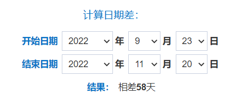
😅这篇博客记录了9.29-11.17，两波疫情之间，简短的研究生生活。
😅舍友说在这里的时光可以用四字箴言来形容：润-寄-摆-屑，我觉得非常有道理！
😅如果不小心透露了啥不合适的敏感信息，马上删改。
目录
- 9.29
- 9.30
- 10.1
- 10.2
- 10.3
- 10.4
- 10.5
- 10.6
- 10.8
- 10.10
- 10.11
- 10.12
- 10.13
- 10.15
- 10.17
- 10.19
- 10.21
- 10.23 寄！
- 10.24
- 10.25
- 10.26
- 10.27
- 10.29
- 10.31
- 11.1
- 11.2
- 11.3
- 11.4
- 11.5
- 11.7
- 11.8
- 11.9
- 11.11
- 11.12
- 11.13
- 11.16
- 11.19
9.29
07:14 发生甚么事了
一觉醒来：
所有公寓的新生，严格“三天不动”，三天不进浴室，不去洗澡。
七一路校区同学不出宿舍，餐食由学校安排人员送餐。
自9月29日起全校所有研究生的理论课继续线上上课，学生无需去教室集中上课。
😅一开始还不知道发生甚么事了，莫名其妙就封控？听了小道消息才知道有小🐏人了。
😅第一反应是我这个南方人一下就要体会三天不去洗澡，我不能接受。
07:34 寄！
从小道消息得知很多学生要被拉去酒店隔离，想起了之前发生的贵州大巴翻车事件，就非常害怕。
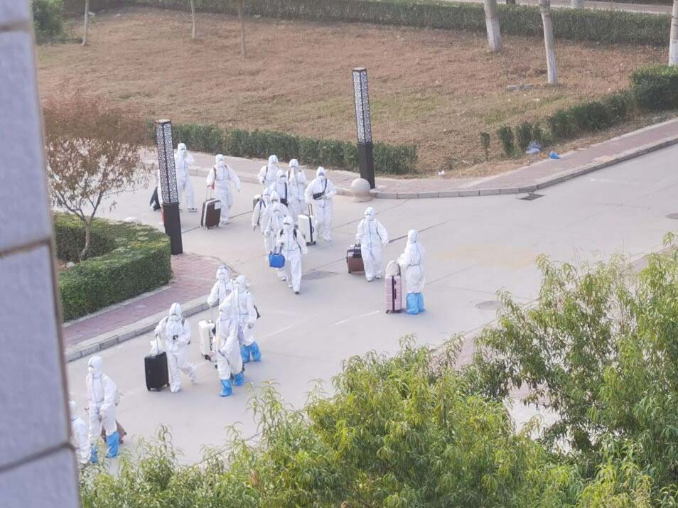
08:38 吃！
第一天突发情况估计送饭根本送不过来，就把之前在校外买的苹果和牛奶当早饭了。
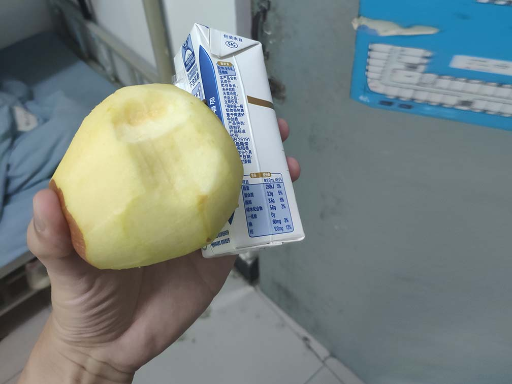
14:42 饿！
午饭同样是发不过来，就吃了碗之前买的拌面当午饭，发的午饭当晚饭，发的晚饭当第二天的午饭，以此类推我就能按时吃饭了😅
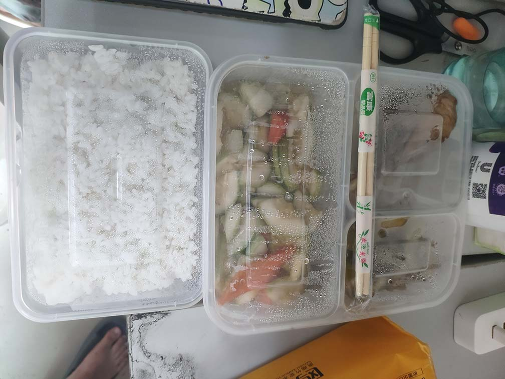
21:24 真是屑啊
据说澡堂还是开的，但是不让新生用，我怕刷卡留下消费记录就没敢去洗，就拿毛巾和盆在阳台DIY了😅
9.30
08:58 不寄了？
似乎没有新增？有缓和的迹象？
09:55 测！
于是乎，关了一天又可以出宿舍了，测完特意看了下自动贩卖机，连自动贩卖机都封了😅
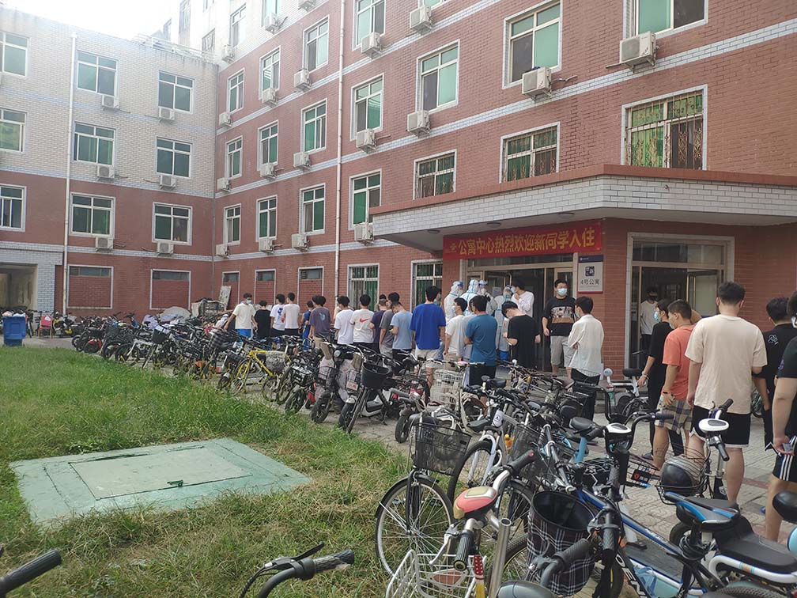
12:56 真是屑啊
今天不送饭了，要求我们下楼拿饭，排队跟个贪吃蛇一样😅因为我手贱拍了张拿饭的照片被老师叫住要求删掉不要乱发还没拿成饭😅我真想送他一句优美的福州话。
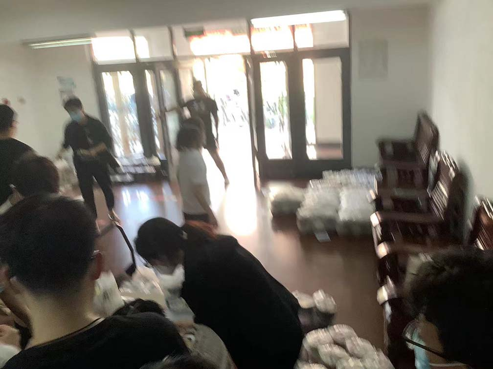
14:26 放假？
出了国庆放假的通知，都这时候了不放假最好😅
关于2022年国庆节假期工作安排的通知
各单位:
根据当前疫情防控形势，结合学校工作实际，现将2022年国庆节假期工作安排通知如下
放假安排
(一)10月1日~2日放假，10月3日~7日按照学校安排正常上班、上课:10月8日~9日正常休息，有教学安排的师生照常上课
(二)国庆节其他假期顺延至寒假补足。
二、工作要求
(一)各单位要提高政治站位，中层管理干部要坚守工作岗位，切实做好常态化疫情防控工作，维护师生生命安全和身体健康。做好值班值守工作，严格值班纪律，保持通讯畅通，遇有紧急或重要事项立即上报。
(二)各单位要严格执行请销假制度，坚持非必要不外出、非必要不离保，党员干部要积极带头就地过节。(三)各单位要继续做国庆节期间教育教学、后勤保障、安全保卫等各项工作，确保正常教学、科研秩序，切实维护校园安全稳定。
特此通知
19:47 好东西！
发了X病特效药——莲花清瘟！因为自己喉咙还真的不舒服就把它吃了😅那时还真怀疑自己中招了😅
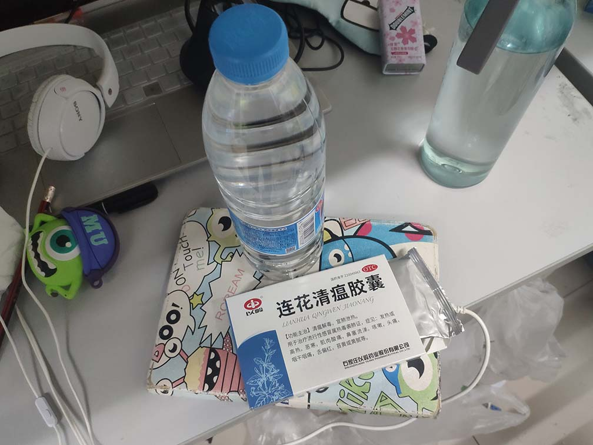
19:59 可怕！
隔壁宿舍又有救护车滴滴嘟嘟~
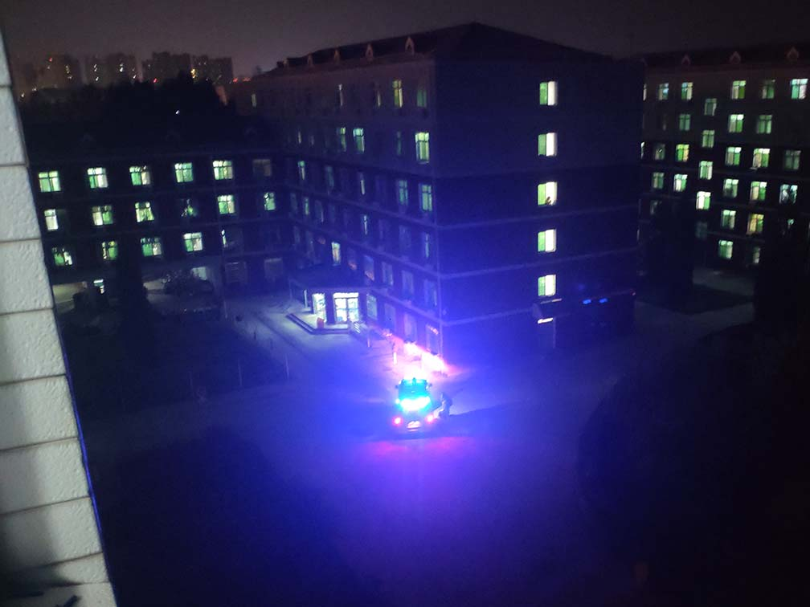
22:43 大寄特寄！
据说这波排查又有新增了，措施再次变严😅
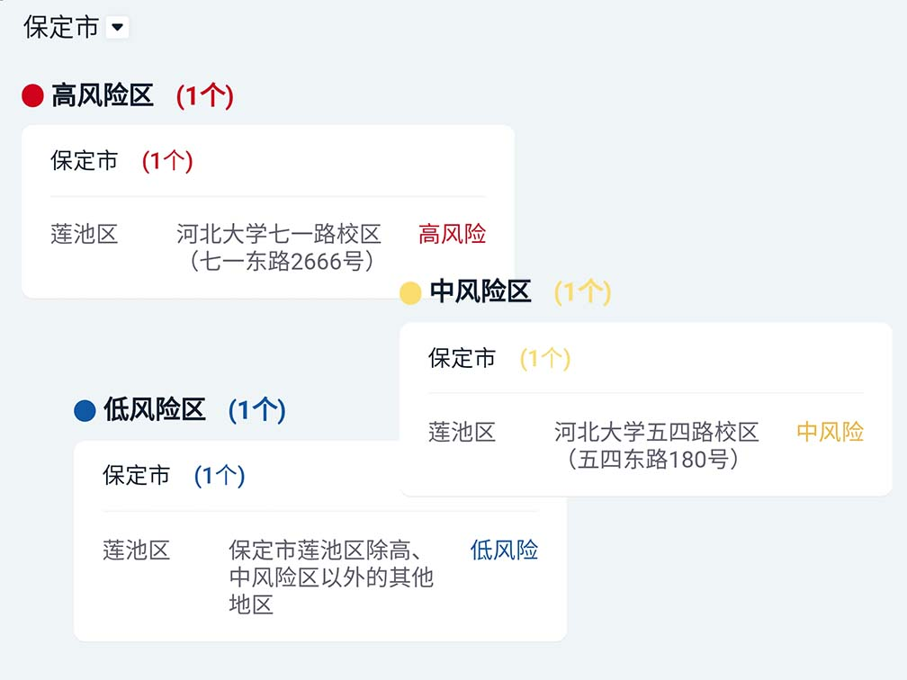
10.1
05:29 测！
10:19 大寄特寄！
大寄特寄😅
13:14 外卖平台
学校超市为满足管控期间师生生活需求，特提供生活必需品网上下单服务，为七一路和五四路校区内的师生提供生活必需品并免费配送。
备注：七一路校区已开通，五四路校区10月2日早7：30开通。
那时候担心水不够喝，结果学校刚好开了个外卖平台，我眼疾手快地抢了六瓶水熬到了后来热水壶进宿舍。
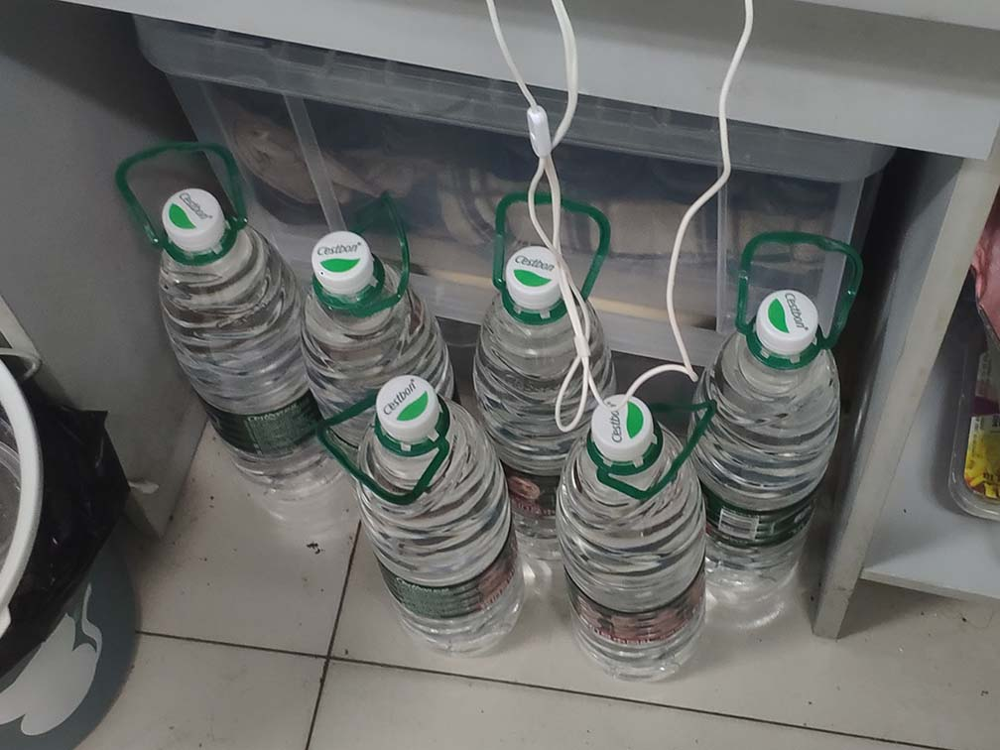
10.2
各位同学，请大家谨遵防控要求，
1.每天完成核酸检测。
2.除上厕所外不出宿舍，听楼层管理员指挥，不同时2人到厕所。
3.未解决大家困难，烧水壶，口罩体温计会陆续到位，请耐心等待。
08:11 吃！
封控的那段时间每天坚持把吃的东西拍了下来，我感觉吃的还算不错。但是听说一人一天伙食费标准是60？那好像有点贪污嫌疑。
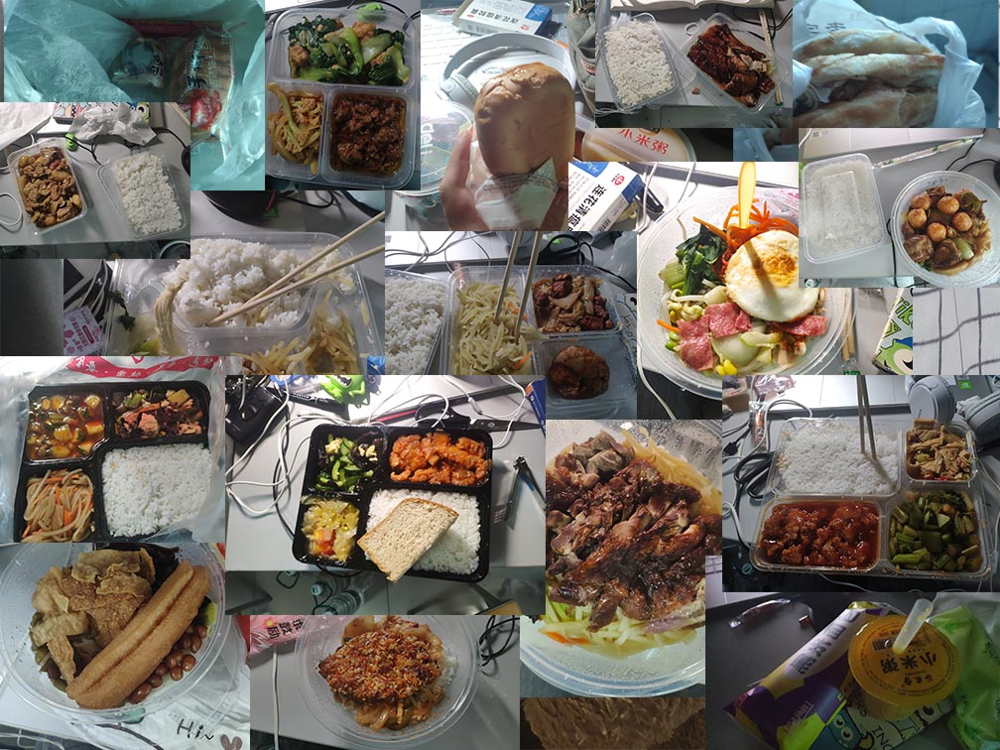
10.3
各位同学很多物资在陆续派发中了，比方说电水壶，口罩，卫生纸，卫生巾。人力有限，请同学们稍等。
10.4
13:33 宿舍
隔壁宿舍太吵被举报了哈哈哈哈
其实还挺感谢我能分配在一个比较安静没啥不良习惯的宿舍，而且舍友都挺好，一开始还挺怕六个人六个省住不习惯来着。
10.5
昨天学校的防控会强调了如下几件事情：
1、每日核酸必须必须必须完成。学校已经开启了比对模式。
2、请各位同学在宿舍保持静默，除佩戴口罩按指引逐一轮流上厕所外，不要出宿舍。昨日，学生宿舍乱串的负面名单上，咱们学院被点名了。
3、校内外的老师们都关爱着我们的同学。有十分必要和紧急的需求，我们不嫌麻烦，不怕费周章，想进一切办法满足。也请同学们理解全员抗疫的艰难。
全体同学虽不是锦衣玉食长大，也是不愁吃穿，快乐幸福。但是疫情当前，请同学们学会艰苦奋斗，也算是学会在各种环境下生存，磨练意志，锤炼品质吧。
19:42 胜利的曙光？
各位研究生，从核酸采集渠道反馈了一个事情，由于工作需要，七一路校区入户采集核酸的时间大约在早晨5点左右，许多研究生在采集人员敲门时没能很快的起床，致使核酸采集拖延的时间太长，因此各位领导给研究生同学们提个醒，请同学们提前定个闹钟啥的，起床稍快点，不要让医护人员等太长时间，也请同学们再辛苦几天，我们已经看到胜利的曙光了。
10.6
22:53 胜利的曙光！
各位同学，大家好。这么晚打扰了。刚刚传来消息，如果我们坚持多日核酸检测结果全部为阴性，且校内外无新增，七一路校区有希望很快降级为中风险区，校内防疫政策也随之调整。
按照中风险区的校园管控要求，各宿舍可选定一名固定人员，每日外出为宿舍成员采购餐食、取收快递等。请同学们以宿舍为单位，今晚选出一名有担当、讲奉献的同学承担此项工作。并将如下信息写到一张纸上（公寓名称、宿舍号、姓名、学院、电话），务必交给明早的核酸检测楼长志愿者。终于看到曙光了，河大加油，同学们加油，坚持一下，会越来越好！
风险区终于要降级了！
本来我憋坏了特别想出去帮舍友打饭。结果河北的那个舍友说我进宿舍就再也没出去过？你太可怜了让你出去打饭吧😅
10.8
07:45 吃！
吃的一下就花了起来！不过一开始还是吃不习惯河北食堂的菜，千嘱咐万嘱咐舍友不要点辣的。
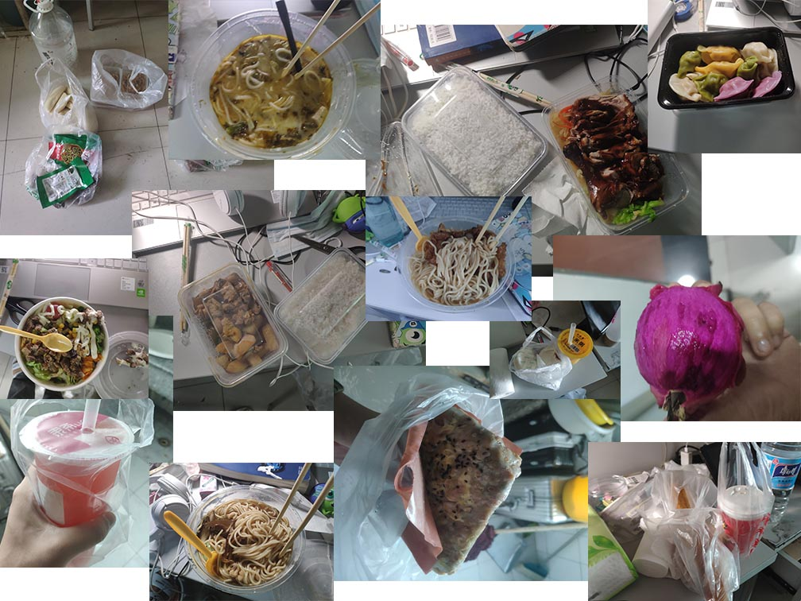
10.10
21:48 摆！
鉴于我校三个校区疫情风险等级降级，目前阶段教学工作安排如下：
1.工作原则：线下为主、线上为辅、分区实施、有序恢复。
2.各校区自转入低风险地区之日起，开始逐步恢复线下教学。
3.驻守校内的任课教师开展线下教学，有不在校学生的课堂应开展线下线上同步教学，暂不能入校的任课教师继续线上教学。
4.按照任课教师通知的上课方式进行课程学习。
5.如为线上授课，学生原则上到原定教室上课并佩带口罩！
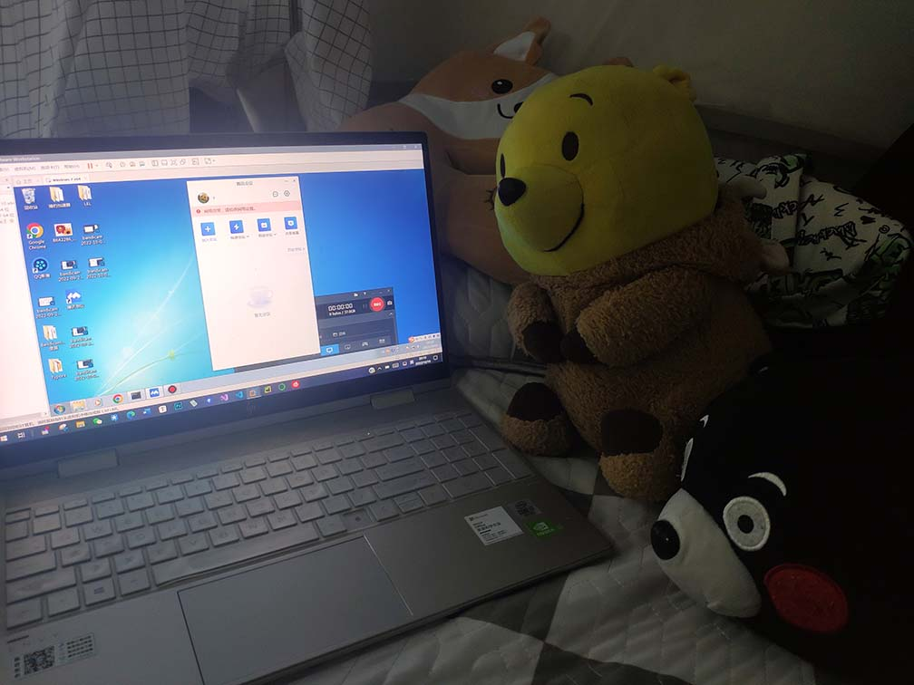
10.11
06:00 真是屑啊
可以出宿舍了。
记得那天醒来做了个噩梦，感觉学校的防控措施还是严得离谱，心情还是十分低落，不知怎么的就写了篇小作文。
大早上被一个很奇怪的梦惊醒。做了一个自己坐飞机回家，到家以后发现再也去不了学校的梦。 两天前和爸爸聊天聊着聊着就哭了。明明读研是之前梦寐以求的事情，从初试成绩到调剂拟录取的那段折磨的时光里我一滴眼泪也没掉。 这些可能都是对现状的不满吧。学校在今天上午降成了常态化防控区域，却还是要被各种官僚主义和形式主义所束缚，还要干一堆脱裤子放屁的事情。我已经研一了，与大一的自己相比，优势是不再对大学生活充满希冀，经历了大学四年后，对这些事情有了一定抵抗力，劣势是经历了考研更加感受到时间的宝贵和学习的重要性，到目前为止还没开始真正的研究生生活，我真对去年的自己感到不值。如果工作单位知道我们都是以如此的培养方式培养出来，还会觉得这个学历有含金量吗? 昨天xx日报发了个文章"要增强对xx的耐心和信心"，除了一堆草泥马在心中飘过外，意识到这样的状况在短时间内并不会得到改变，真的很对自己的未来担忧。今人不见古时月，今月曾经照古人。我现在感受到动乱的那十年是有多么恐怖，很多东西都被这种zz正确所践踏。
07:09 润！
出完宿舍感觉心情好了不少。学校在宿舍门口拉了个横幅，欢迎转运回来的学生。
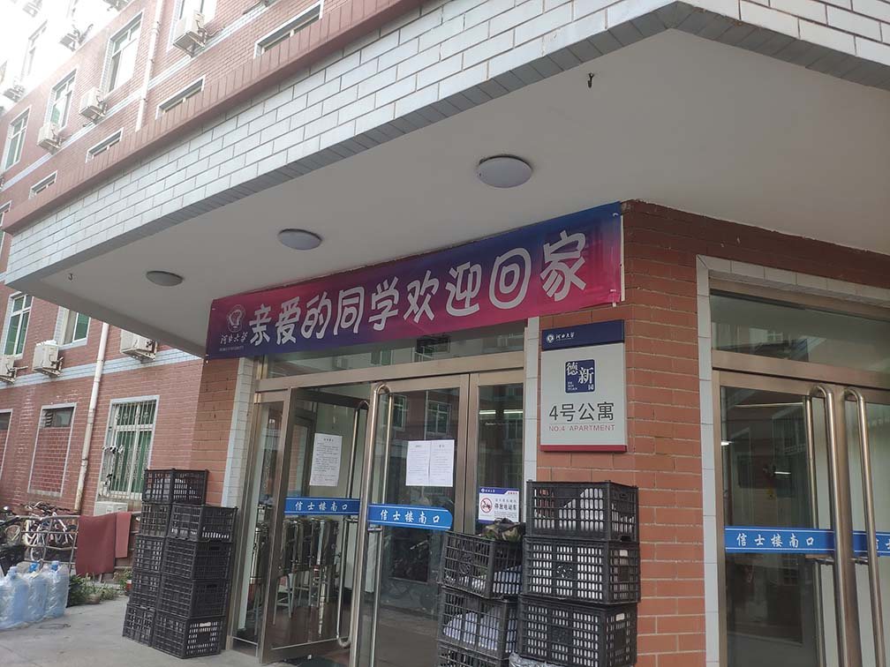
08:13 图书馆
终于可以进图书馆了！感觉冀大的图书馆要比师大的高级一些。
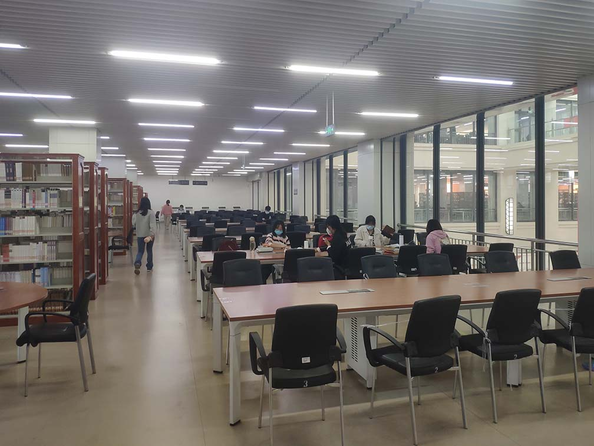
09:22 食堂
食堂开了但是不让堂食。于是我就买了个保温包！非常好用！
感觉这里的食堂也比师大的便宜不少。但是这里吃面居然没有加煎蛋的选项！
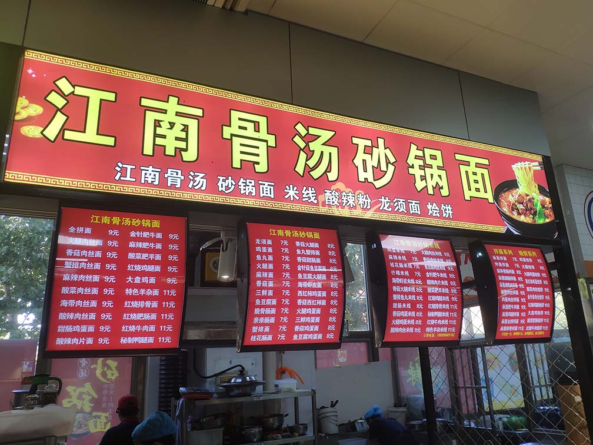
18:53 摆！
来冀大的第一次线下课，是zz课，那天坚持听完结果好晚才回到宿舍，导致澡堂要排队，看了好久的屁股才洗到澡，大家估计都好久没洗澡导致宿舍水压不够停水。后来，我再也没在教室完整地听完这门课。
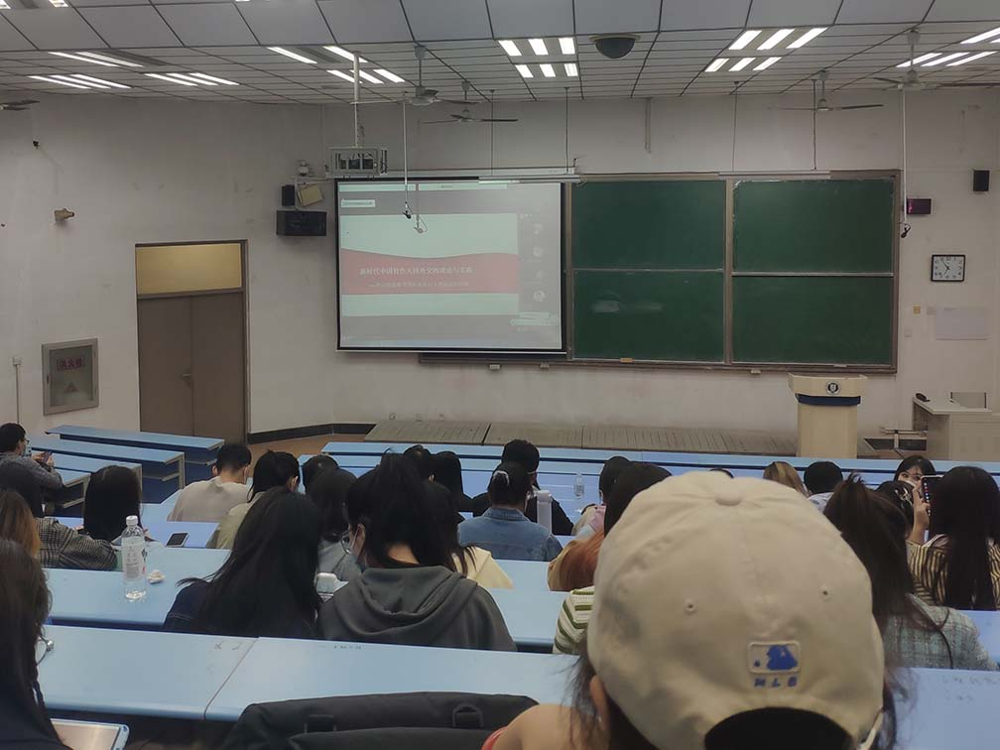
22:26 真是屑啊
之前封控的时候估计没人清垃圾，于是就干净又卫生了。😅
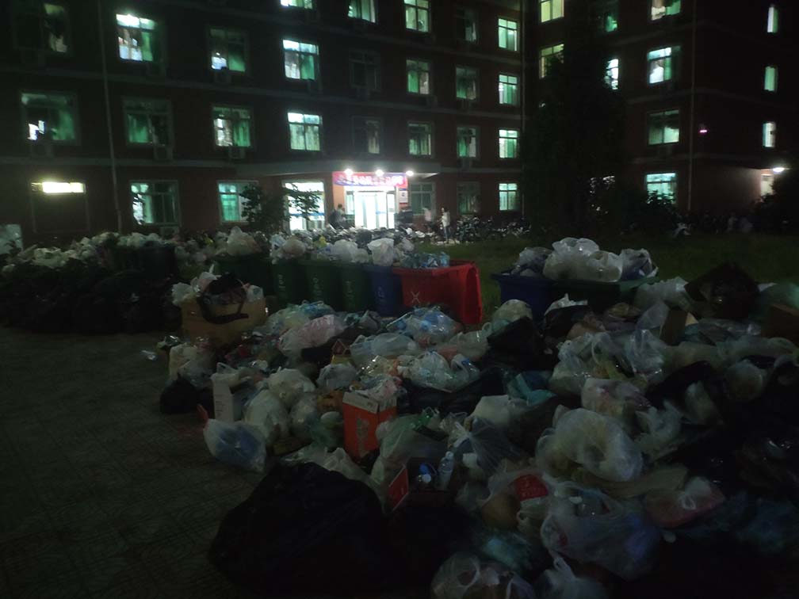
22:31 润！
那天就走了，这么多步吧。第二天就开始腿疼了。
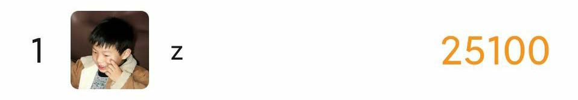
10.12
各位同学，今早去食堂买饭看很多同学已经忍不住堂食了。请同学们还是要保持严谨的态度和自律的精神，按照学校要求，近些天不堂食。说到底，新冠是能传染的，戴口罩不聚集能够有效防止它传染。为了自己也为了同学的健康考虑，请大家多注意。一起再坚持几天。
15:17 摆！
第一次老师和学生都线下的课程！这个老师是我感觉上课的老师里最敬业的一个了。
但是感觉好久没这么上线下课了，还是不怎么想听😅。
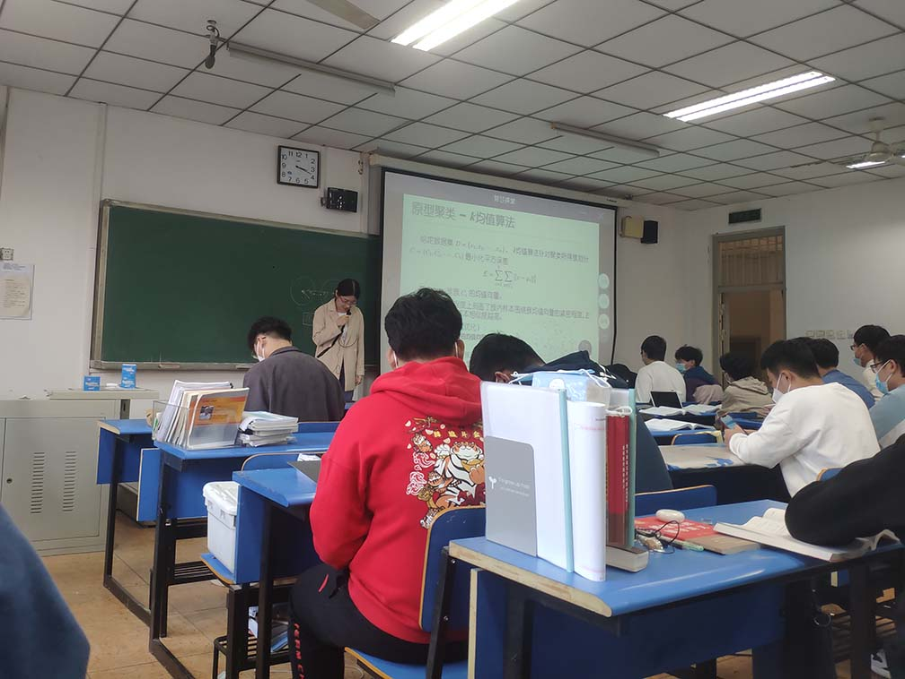
10.13
08:10 润！
这是个线下上线上课的课程，学院居然还要求我们过去凑数拍照？我想想憋宿舍太久了不如去教室上课吧。
专业课还要讲思政内容真是愚蠢！
听了一会儿觉得还不如线上效果好，就润出去测核酸了。
从此润得一发不可收拾。
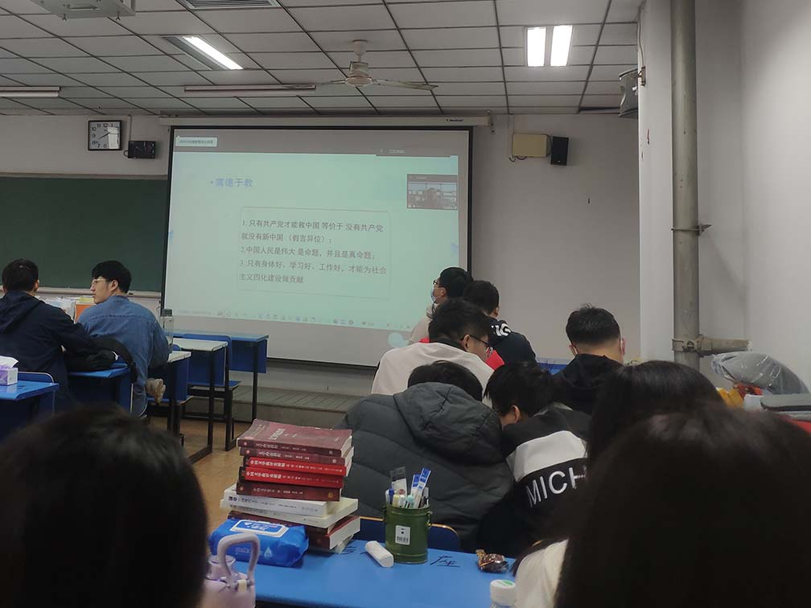
08:45 真是屑啊
排队测核酸，记得排了快一个小时。我深刻感觉这边人均资源不如福建，什么都要排队，河北排队大学。
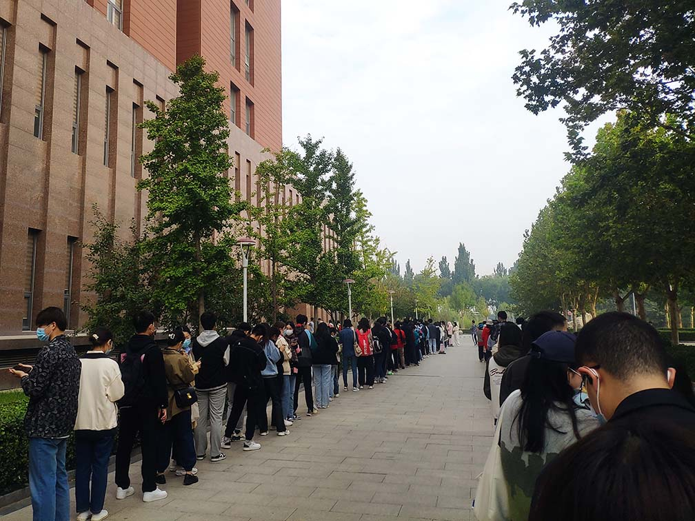
19:40 摆！
当天在学校泡图书馆泡到了晚上却感觉没学到什么东西。那时候很精神内耗，看本科同学工作的在挣大钱，读研的也步入正轨，就我啥也没有还在为活得正常点而烦恼。
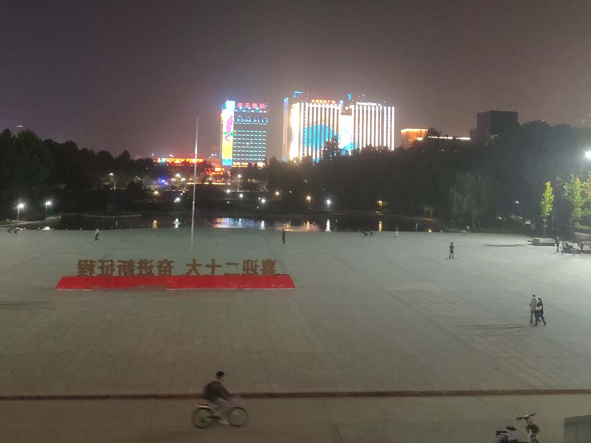
10.15
09:09 摆！
看同学都联系好了导师，而我之前联系的一个研究计算机图形学的老同志没回我，我就联系回最早联系的一个导师。我真是个二五仔😅。
结果导师说保我了？还蛮开心的。
一开始觉得这个老师有点放养，现在觉得导师松一点挺好的真好啊，生活都快活得不清楚就别卷了。
10.17
自10月17日（周一）起，调整学生出入校管理要求：
1.严格学生出入管理，学生无特殊情况，不离开保定市主城三区。因就医、实习、考试等原因需临时进出校园的，按照请销假流程办理。
2.为在校生开通“日常请假”权限，学生当日出入的由辅导员审批；学生次日入校的由学院相关领导审批，学生需持24小时本地核酸结果入校。
3.为走读生开通走读权限，学生签署两点一线承诺书。走读学生需参加学校安排的全员核酸检测（目前为每周三检）。
4.外出就医流程，由校医院负责。外出诊疗需配合“日常请假”刷脸进出，学生需在易班请假界面上传“转诊单”。
有点解封的迹象。
生活似乎逐渐步入正轨，嗯，似乎。
封控前买了一堆快递终于可以拿了。
09:54 测！
测核酸。
此时银杏树还是绿的。
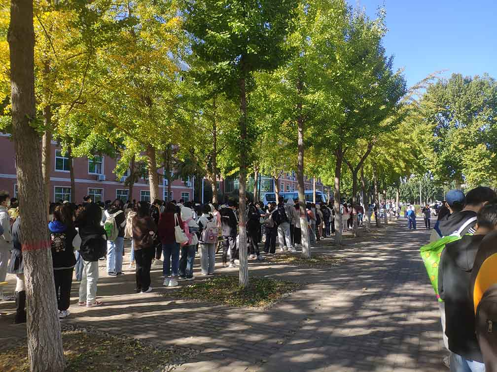
10.19
关于七一路校区菜鸟驿站快件领取的温馨提醒
亲爱的同学们:
由于新冠疫情影响，学校七一路校区菜鸟驿站在9月29日至10月10日期间未能正常运营，产生了14万余件积压快件。
菜鸟驿站于10月11日正常营业以来一直在想方设法增加快件发放量，如增加工作人员和室内货架，充分利用驿站外空地暂时存放和发放快件等措施，平均每天处理快件约16000件。虽然采取了多项有效措施，但截至目前还剩余部分积压快件未能及时发放到同学们手中。
学校高度重视菜鸟驿站快件发放工作，为确保快件尽早发放到同学手中，学校已要求菜鸟驿站采取更有效的措施，向同学们提示如下:
一、增加快件发放点，从明天 (10月19日)起将有部分快件在坤舆生活园区景观大道发放，请同学们在收到提示短信后及时领取;
二、菜鸟驿站和景观大道快递发放点的营业时间由原来的早晨8:00提前至7:00，晚上停止提供服务时间由原来的21:00延长到22:30。
08:18 冷！
此时气温骤降，早上起来叶子甚至会结霜。
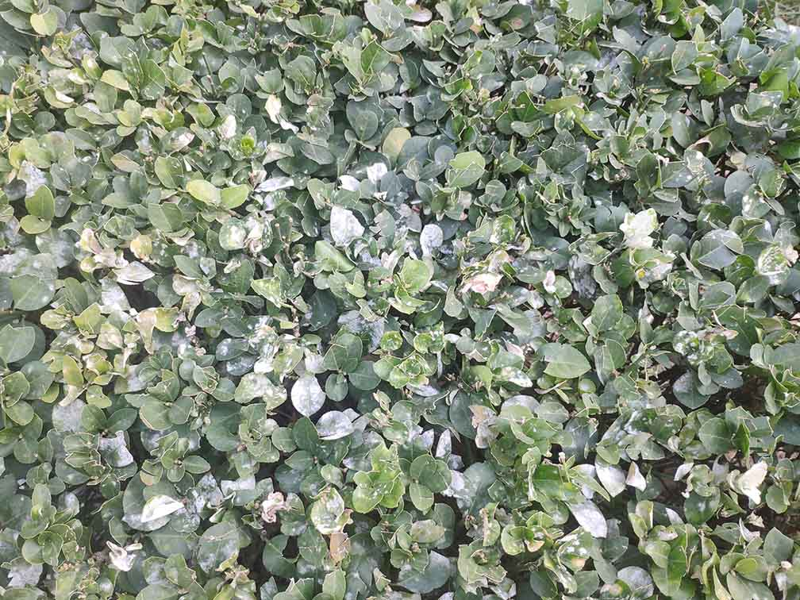
10.21
10:00 见面会
终于见到导师了！一开始还有点紧张，后来感觉这老师很好说话，还问了点生活相关的事情。
最令我惊喜的是跟我选一个导师的还有一个泉州的福憨，回来勾肩搭背地聊了好久。
10.23 寄！
各位同学，10月22日，福州市鼓楼区、晋安区、闽清县通过常态化核酸监测发现混管阳性。根据相关要求通知如下:
1.排查确认10月22日(含)以来有HERA赫拉酒吧旅居史的学生请全体同学按班级指令完成接龙。
2.目前尚在福州市区的学生，尽快返回学校。在福州市区有住所的同学，尽量居家减少流动，待属地进一步明确健康管理措施
从师大同学中得知福州寄了！而我这边生活逐渐逐渐恢复正常，那时还在感慨三十年河东三十年河西😅。
10.24
07:53 摆！
都开学快两个月了才有研究生入学教育😅
没说啥有价值的事情能拖一上午……调剂前觉得冀大的行政效率很好，后来真的觉得我想太多。
然后就要选导师了！
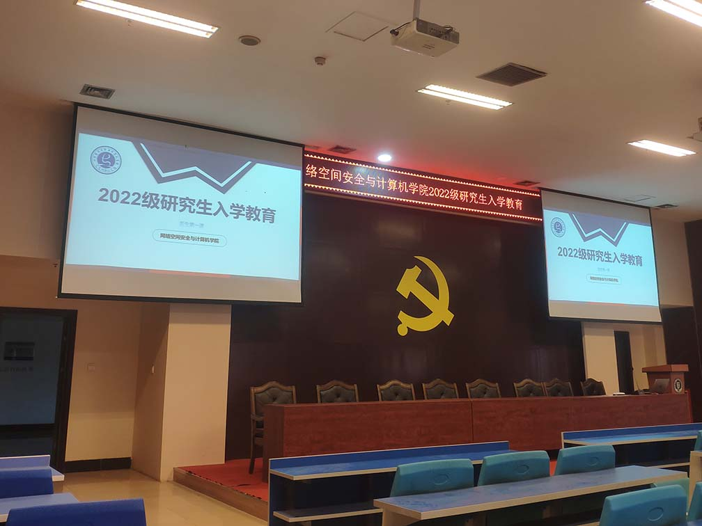
10.25
08:30 组会
这是今年唯一一次的线下组会。我极力去记师兄师姐的姓名emmm还是没记住。
10:31 真是屑啊
真拿疫情当挡箭牌了😅，还好组会上问了导师能不能先进实验室自习，导师说实验室有空位就可以坐。这样我就不用天天挤图书馆了。
10.26
10:30 摆！
在实验室假装自己在科研，看了一篇论文感觉啥也没看懂😅
扭头一看还有师兄在LOL🤪这个实验室不错啊。
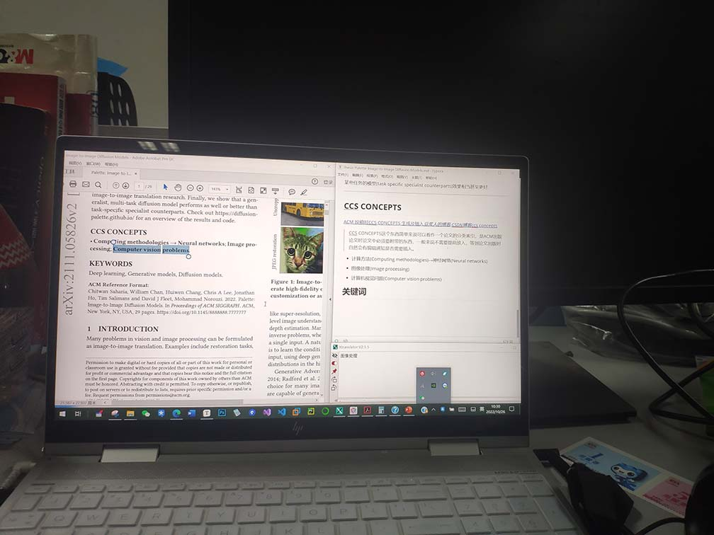
10.27
10:17 测！
银杏树开始变黄了。
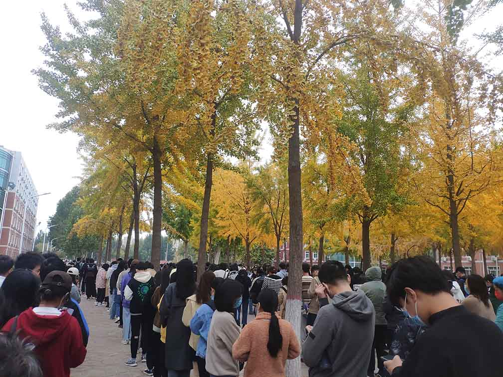
17:22 冷！
10.29
16:48 网安中心？
参观了下冀大的服务器和网安中心（？），不知道在干什么但是好像很厉害的样子。
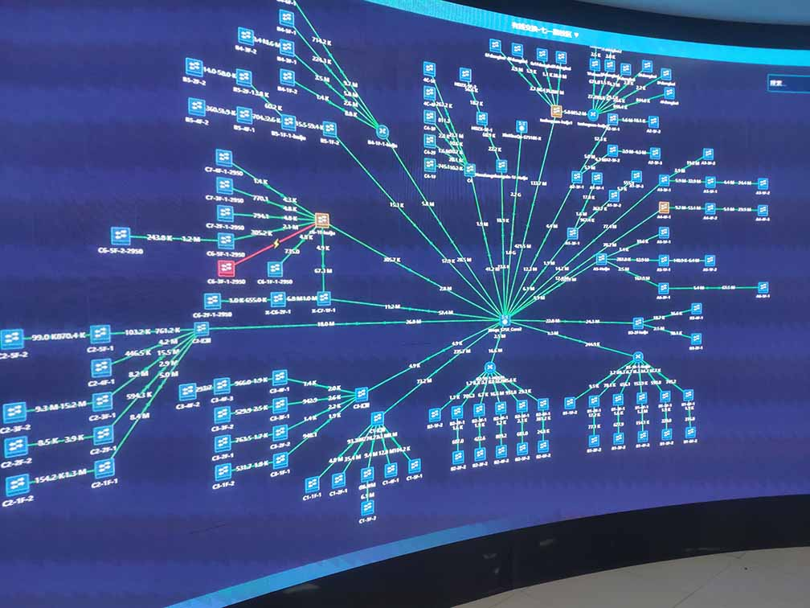
10.31
07:50 摆！
快八点了实验室居然没什么人，师兄师姐可太水了😅
第一次线上组会。导师说304有个空位可以先占，我寻思着可以不去326和老师在一个实验室，还可以早点把座位安定下来，就眼疾手快地占了。
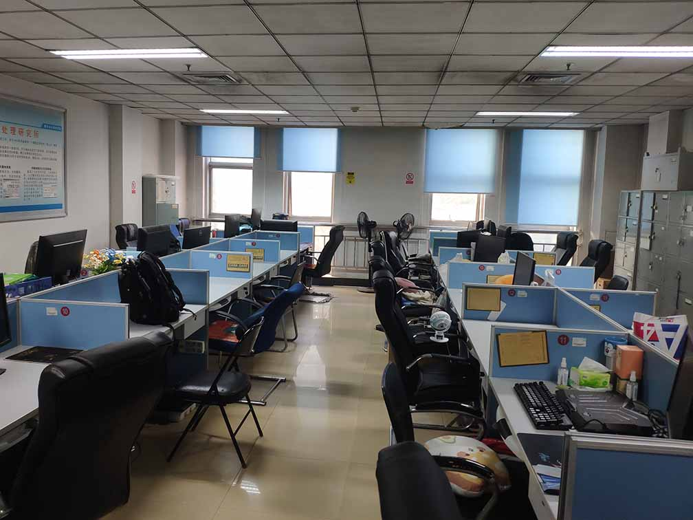
11.1
12:55 真是屑啊
同学们好！从市相关部门获悉，保定市主城区已出现阳性感染者，学校周边情况复杂，为了确保校园安全，学校将暂时关闭易班“日常请假”功能。同学们一定要坚持“非必要不出校”原则，如确需外出，请到学院开具纸质假条，务必全程做好防护。河大人曾经受了九月底那一场疫情的考验，鲜活的场景还历历在目，同学们深切体会到了什么是“足不出户”，什么是“错峰取物”，什么是“关停堂食”…。学期已过半，各种考试准备在按部就班进行，这时候，校园平安就是你我的平安，你的坚守，就是河大的坚守。所以，从我做起，从此刻做起，我们要严格自律，以理解和支持的态度，师生一起抵御风险、携手抗疫！
学校再次闭环。我已经麻木了。
冀大的闭环才叫真正的闭环！其他学校学生不能进出学校，老师可以进出；冀大是学生和老师都不能进出。
11.2
今天依然是全员核酸检测，昨天一天，保定市莲池区新增2例无症状、竞秀区新增3例无症状，核酸检测是判断病毒感染的重要手段，请务必保证全体同学参加当日的核酸检测。另外，今天我们已经向学校提交了全体在校生名单，即日起，每日比对核酸数据，严肃处理未做核酸者。请大家切勿存在侥幸心理。
06:32 卷！
这下我的工位搬到了304并且有了自己的位置，于是我就可以很早地来实验室自习。
我一向起得特别早去实验室，把实验室的其他同学都吓坏了以为我是个卷王。
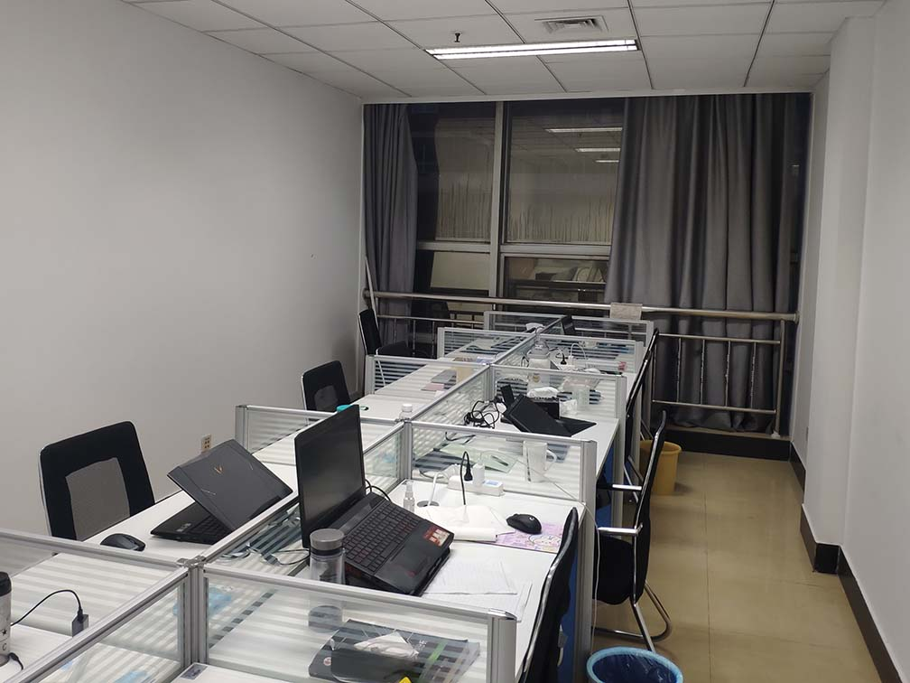
11.3
09:29 测！
银杏树更更黄了！还真是南方不曾见到的景象。
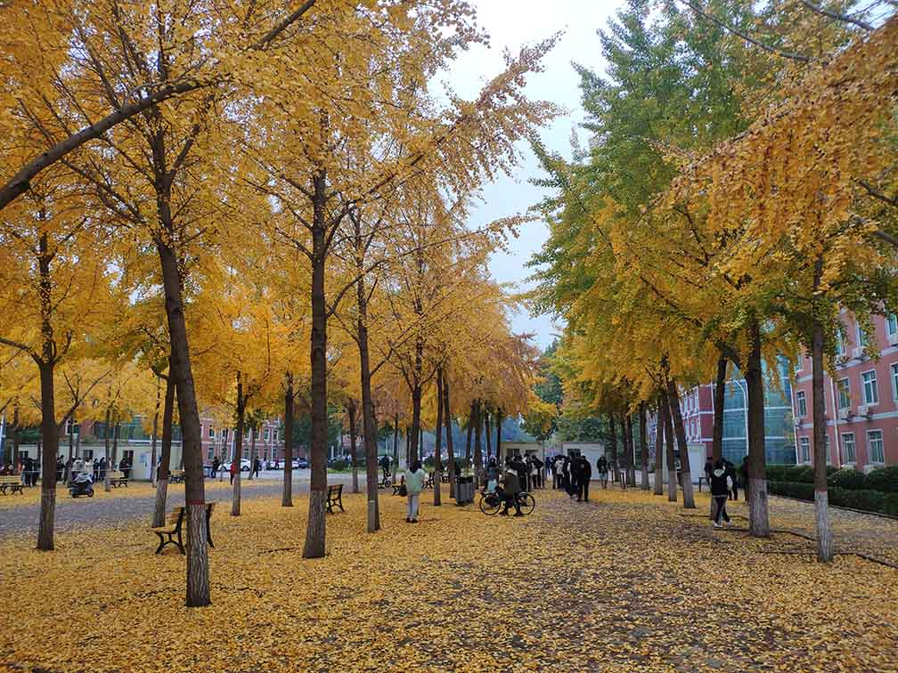
15:00 班会
班会忘记拍照了orz
极力去记每一个上台自我介绍的同学，大概记住了一半吧。
很惊奇还有这么多人愿意去竞选班委？他们是太久没经受过大学生活的毒打了吗？可能是另有其他目的？我就以小人之心度君子之腹了。
才好奇昨晚就有个同学串我们寝室，还跟我们每个人都聊了聊，原来是想赶紧眼熟一下其他同学好拉票选他当班委。我一开始还挺想选他的，结果他上台演讲讲了一半说了句”我觉得我们XXXXX真是太不容易了“，我瞬间就不想选了我这个罕见听不得这个😅真的觉得这里有些人很，陈腐？要不就话多得令我感到不适。
11.4
06:30 雾！
平流雾（advection fog），是当暖湿空气平流到较冷的下垫面上，下部冷却而形成的雾。多发生在冬春时节，以北方沿海地区居多，能将城市中的建筑物“缠绕”其中，才使身处地面的人们觉得如临仙境。
平流雾和空气的水平流动是分不开的，只要持续有风，雾才会持续长久。如果风停下来，暖湿空气来源中断，雾很快就会消散。
早起去实验室发现路上可见度极低，以为是雾霾，查了下这个现象叫平流雾。
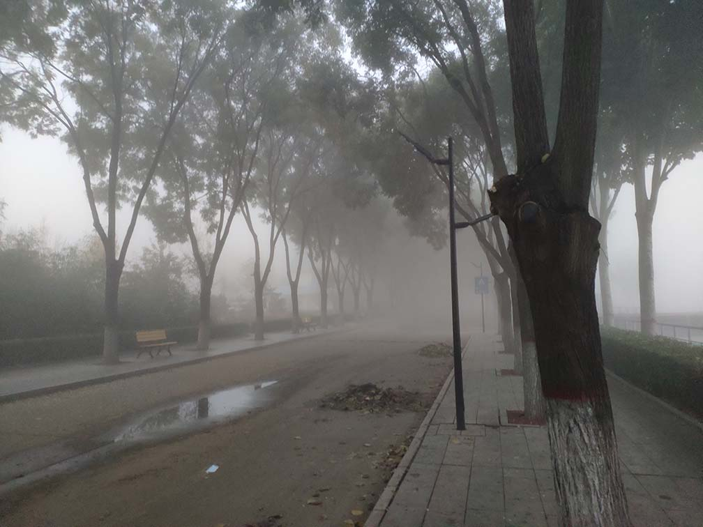
15:00 真是屑啊
有个什么活动，不知道为什么学院特别看重😅
一年一度由中国计算机学会（CCF）主办，河北大学承办的“CCF走进高校活动”，特邀XX老师（CCF会士，XXXX大学原计算机学院院长）来演讲报告，本次报告题目为“近数据处理的模式、挑战和实践”。请同学们前来参会。
一、会议时间：11月4日（本周五）。下午 15：00-16：00
二、会议地点：河北大学新校区XX（研一）、XX（研二+研三+本科生）、XX（教师）。要求：研一研二全体同学到场，届时签到计入考勤；研三选择性参会。
三、校内学生全体参与线下会议；校外学生开放腾讯会议参与线上会议室。
四、会议流程：
1.入场签到，请所有参会同学于14:45入场签到并隔位就坐（带好口罩）。
2.院长致辞
3.XX教授会议报告
4.提问环节（前5名提问者必有奖品，可以挑选）
5.主持人致谢
6.X老师讲话
7.活动环节（参与线下的同学都有资格参与抽奖、非CCF会员无法参与）
8.活动结束，顺序离场（获奖同学及工作成员留下合照）
注：以上环节奖励机制和抽奖机制只面向CCF会员。因为学院所有研究生都要加入CCF（中国计算机学会）成为会员，因此以上活动研一所有同学都可以参与五、补充:本次会议为大家准备了丰厚的礼品，根据大家在提问环节的表现和其他现场小活动发放（奖品内容有：
1.筋膜枪 、
2.Anker品牌充电宝（带充电头）、
3.旅行收纳7件套、
4.多功能折叠小风扇 、
5.网红大肚杯、
6.电脑/iPad/手机通用铝合金支架、
7.抽绳包、
8.时尚鸭舌帽 。
奖品总数共计30多个）
本来还蛮想认真听的，这一通知下来瞬间就哈哈😅把全学院研究生凑过去当面子，我又想说优美的福州话了，官僚主义实在是太严重了。最后就在会议上跟舍友打了好久的斗地主。
当时那个教授就很好奇为什么这里的学生这么听话都带着口罩，还随口说了一句”原来河北大学在保定啊，我以为在石家庄呢“，我笑死。
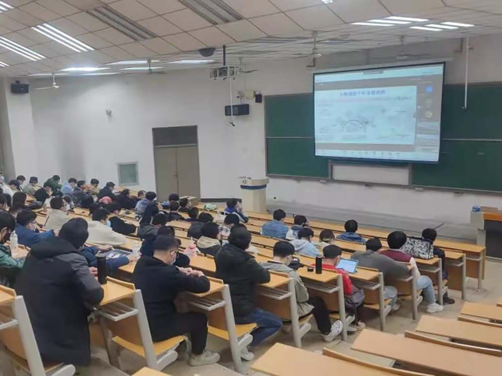
11.5
09:48 好看！
写代码写累了从实验室出来散散步，拍了点落叶的照片。
其实这段时间心情已经比较平静了，感觉逐渐适应了学校的生活。
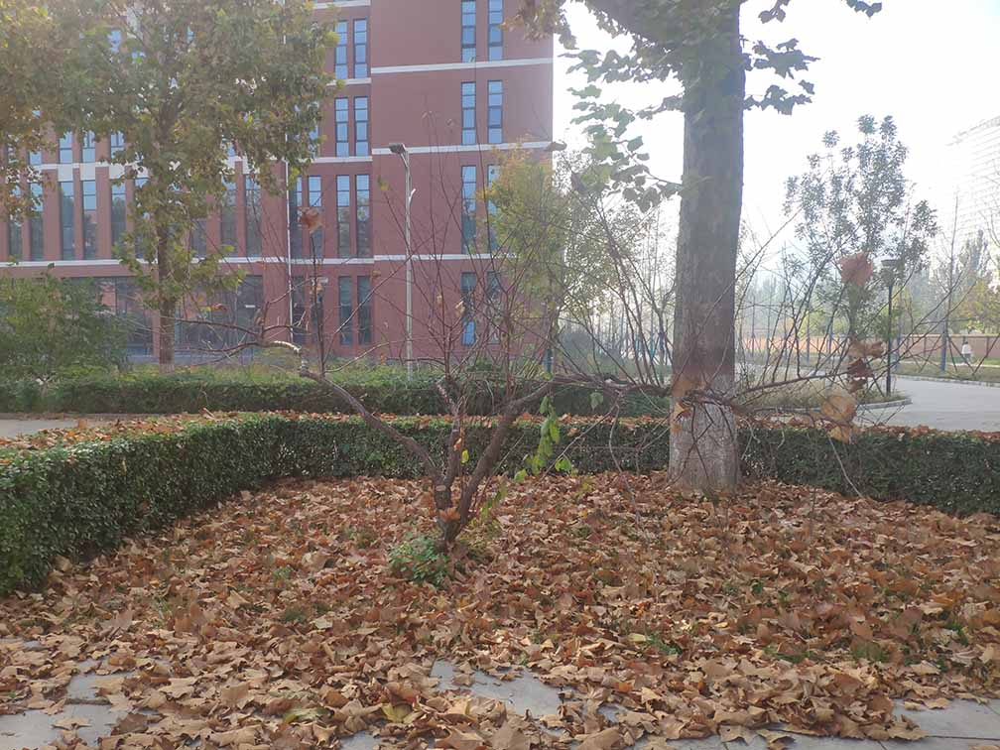
11.7
同学们好，刚接属地防控部门通知，明天学校将按照全市统一部署，继续进行全员核酸检测，请大家利用课余时间，做到应检尽检。
同学们，当核酸检测医务人员每天全副武装出现在我们面前的时候，当一批又一批志愿者同学早早地准备检测区的时候，当同学们一次又一次有序排队参检的时候，这意味着什么呢？意味着，市区以及周边地区的疫情不容我们放松警惕；意味着，校园内目前是最安全的地方；意味着，新冠病毒远比我们想像中狡猾；意味着，全体河大人正在克服种种困难，紧守平安防线！今日立冬，冬天来了，春天还会远吗，老师们和你们在一起，让我们一起共渡难关，河大人，要抱紧、加油！
10:06 测！
银杏树彻底黄了！
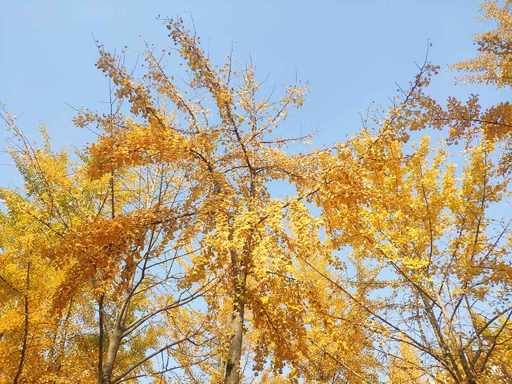
18:16 有钱！
喜提工资：600元/月
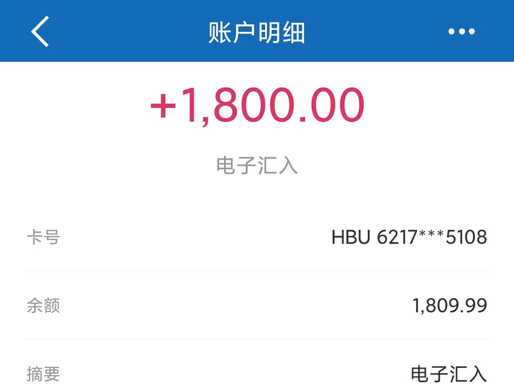
11.8
同学们好！从媒体报道可知，近日全国疫情出现了点多、面广、持续爆发的形势，仅11月7日，河北省新增无症状感染者47例，其中，保定市4例。省内已有兄弟高校陆续出现阳性感染者，那里的师生正在经历严峻的考验。今天学校接莲池区防控办提示，近期疫情形势异常复杂，驻保各高校要继续严格校园管理，并按时按频次组织全员核酸筛查。同学们，紧闭的校门为大家带来诸多不便，但在当前特殊形势下，阻止疫情向校园蔓延是我们共同的责任，校园平安是师生最大的福祉。恳请我校广大同学支持属地防控部门决策和学校的防疫举措，不论你身处校内还是校外，都要按时参加学校或社区组织的核酸筛查，同时遵守各项防疫规定。重要的话老师要不断强调：戴口罩、勤洗手、做核酸。明天起，按照市统一部署，我们还要连续进行全员核酸检测，同学之间互相提醒，一定要做到应检尽检！
11.9
同学们，11月8日0—24时，全国报告新增新冠肺炎确诊病例1346例，新增无症状感染者6989例。其中，河北新增确诊病例1例，新增无症状感染者66例。今天获悉，省内已有九所高校出现疫情，我们的高校同伴正在打响疫情遭遇战、攻坚战。也许，你的朋友正深处其中，也许，你的亲人正在一线奋战，也许，对河大人来说，要紧的时刻才刚刚开始。我们一定要严格遵守学校各项防控规定，坚决克服麻痹思想、厌战情绪、侥幸心理、松劲心态，与疫情的较量，不是哪一个人的，我们大家要拧成一股绳，劲儿往一处使，牢牢守住校园防线。同学们，谢谢你们，谢谢你们的努力和坚守，谢谢你们的理解和配合，守纪律、顾大局、讲奉献、勇担当，是河大青年的样子👍👍
11.11
11月11日，国务院应对新型冠状病毒肺炎疫情联防联控机制综合组公布《关于进一步优化新冠肺炎疫情防控措施 科学精准做好防控工作的通知》
05:55 真是屑啊
起太早才知道晚上宿舍楼会锁门，而且6:00才会开😅因为每天都很早去食堂买肉夹馍，卖肉夹馍的叔叔阿姨都已经认识我了。
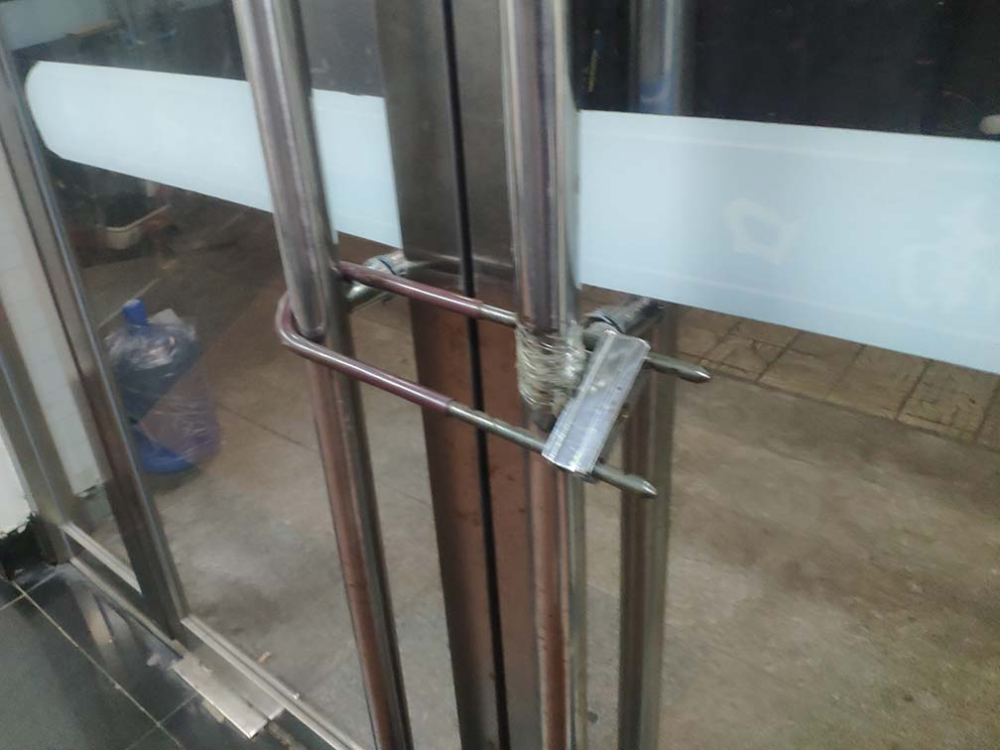
11:12 测！
上午又不知道是哪个sb领导要来把图书馆的检测点关了😅还特意嘱咐我们不要去看😅于是早上唯一一个检测点又排得跟个贪吃蛇一样，排了一个小时我饿死。万幸校园很好看，银杏树下打伞的众人。
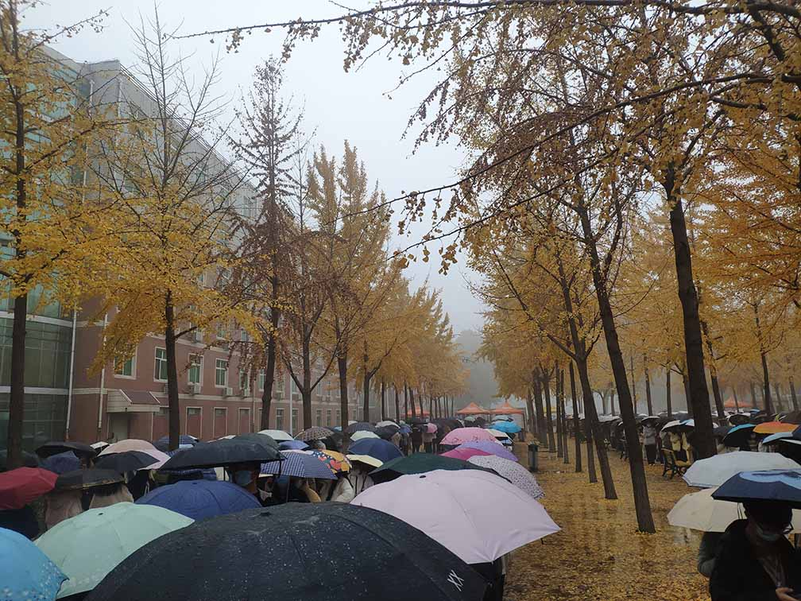
18:37 洗！
因为衣服实在太大，在冀大第一次开了洗衣机。
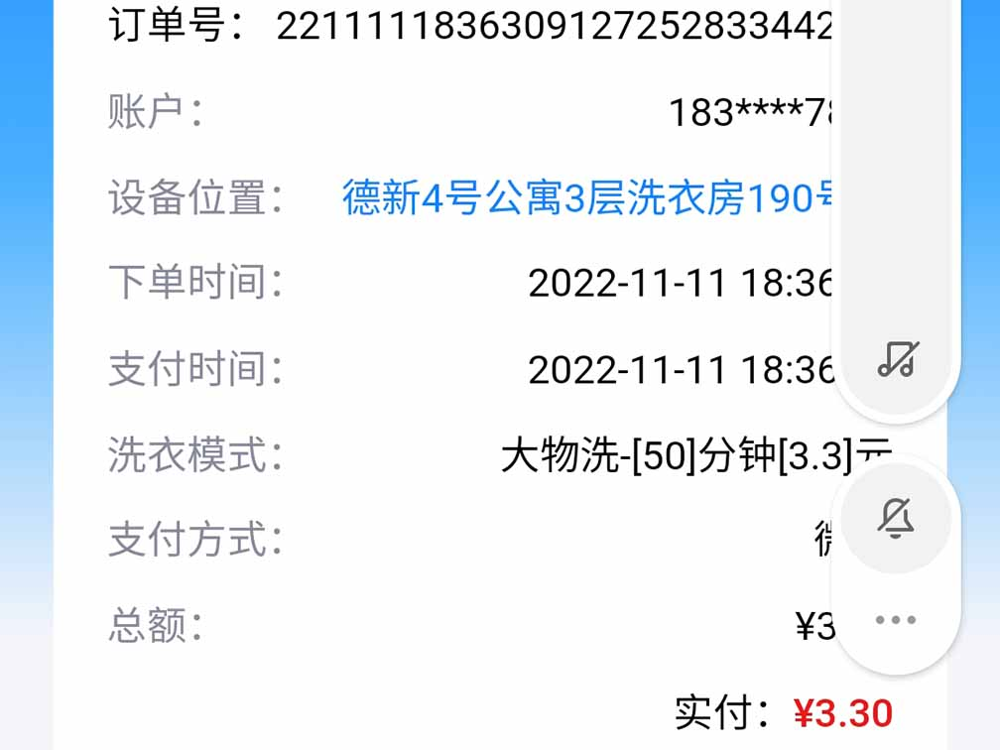
22:03 不测了？
这二十条还挺好使？都不知道连续测了好几天，明天居然不用测了。
同学们，按照保定市统一安排，我校明后天（11月12—13日）不组织核酸检测，下周周一（11月14日）、周三（11月16日）、周五（11月18日）继续开展常态化全员核酸检测，具体检测时间地点、注意事项不变，请同学们主动配合，做到应检尽检。
11.12
00:00 摆！
第一次在北方过生日，不过好像也不怎么想过😅
之前特意跟舍友说我不过生日的，然后宿舍就少了一次吃火锅的机会。
奖励自己一天不科研，写了一天Unity。
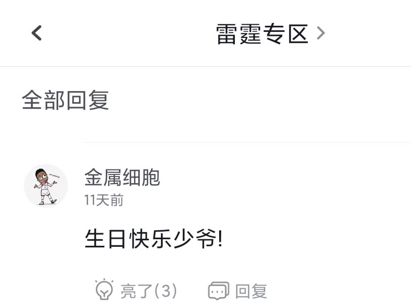
11.13
石家庄“放开”了。
【#石家庄回应网传取消全员核酸检测#】
11月13日，有网友在网上爆料称，石家庄疑似不再于公共场合查验核酸证明，记者从石家庄疫情防控咨询电话工作人员处了解到，目前石家庄确实不要求全员强制核酸检测，只对重点人群及重点工作岗位施行核酸检测，其主要依据国家日前发布的《进一步优化疫情防控20条措施》的第6条，即没有发生疫情的地区严格按照第九版防控方案确定的范围对风险岗位、重点人员开展核酸检测，不得扩大核酸检测范围。一般不按行政区域开展全员核酸检测，只在感染来源和传播链条不清、社区传播时间较长等疫情底数不清时开展。制定规范核酸检测的具体实施办法，重申和细化有关要求，纠正“一天两检”、“一天三检”等不科学做法。
#石家庄不要求全员强制核酸检测# #石家庄疫情防控#
11.15
看贴吧得知隔壁农大寄了。
同学们，因为保定有兄弟院校已经出现阳性病例，溯源为外卖，所以我校规定：一定不要订外卖，不隔着围墙、栅栏等与外界社会人员互相递送物品。如果有必须的被褥、衣服、药物等必须品（切记不能递送食物），可让亲朋或其他人将物品完整包装后，在XX，将物品完整打包后放在XX。学校在门口统一消杀，还会再拆开包裹用紫外线二次消杀。。第二天中午XX到XX领取。
18:36 暖气
如之前导师所说，11.15开暖气，还真是。
教学楼的房间瞬间热的一笔，我都不好换衣服了。
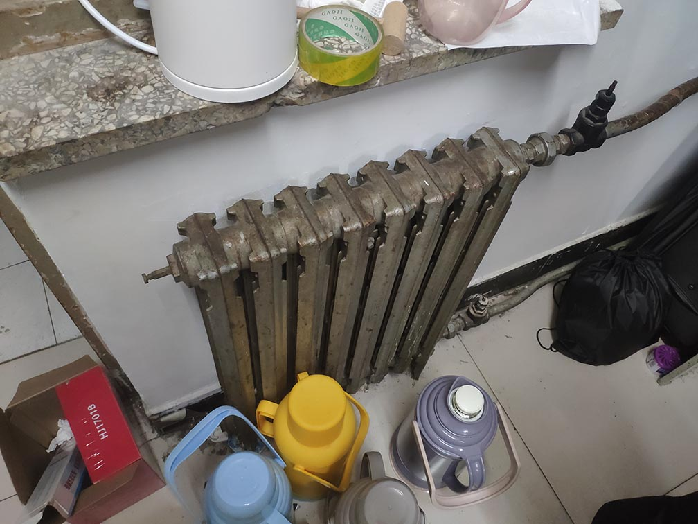
11.16
各位同学，最近已经通过走访宿舍、文字、会议等形式苦口婆心、三令五申跟大家说不订外卖，不隔着墙、栅栏递送物品，今天就有同学心存侥幸，偷偷递送物品未遂被保安拦下。真是万幸。如果形成违规递送物品的事实，肯定严惩不贷。当前因为外卖或者递送物品未消杀，很多高校出现阳新病例，非常时期，请同学们不要心存侥幸，或者不够重视，切勿以身试法。为了自己的前途，也为了校内所有人的健康平安。
11.19
爷润了。